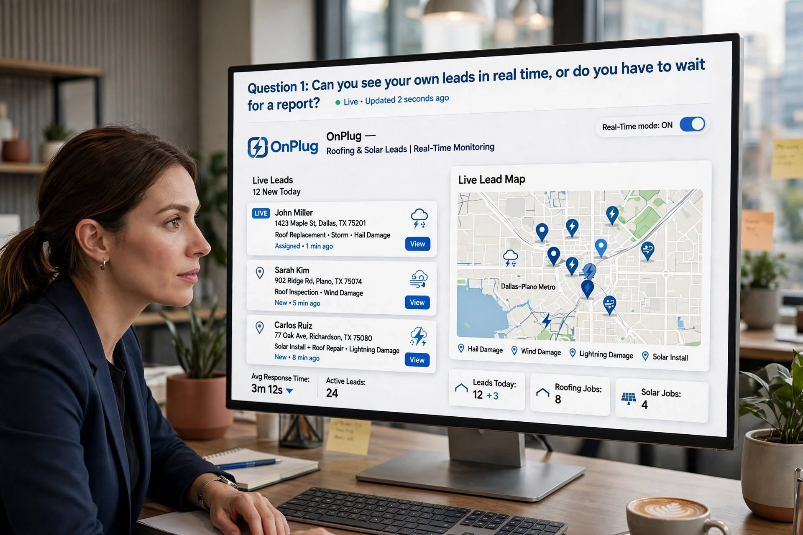
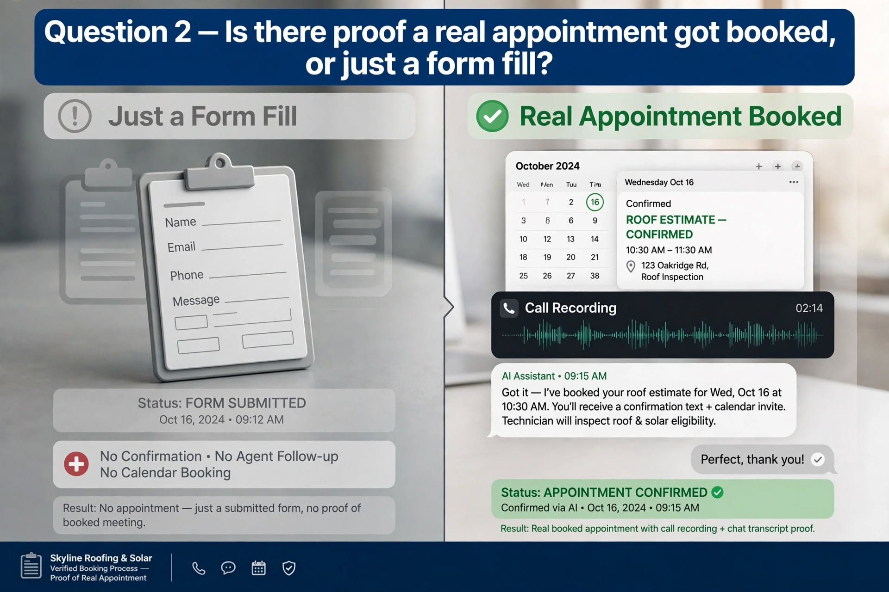
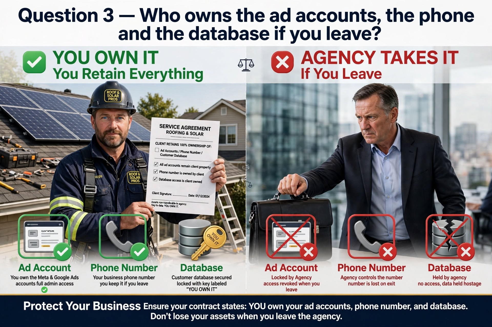
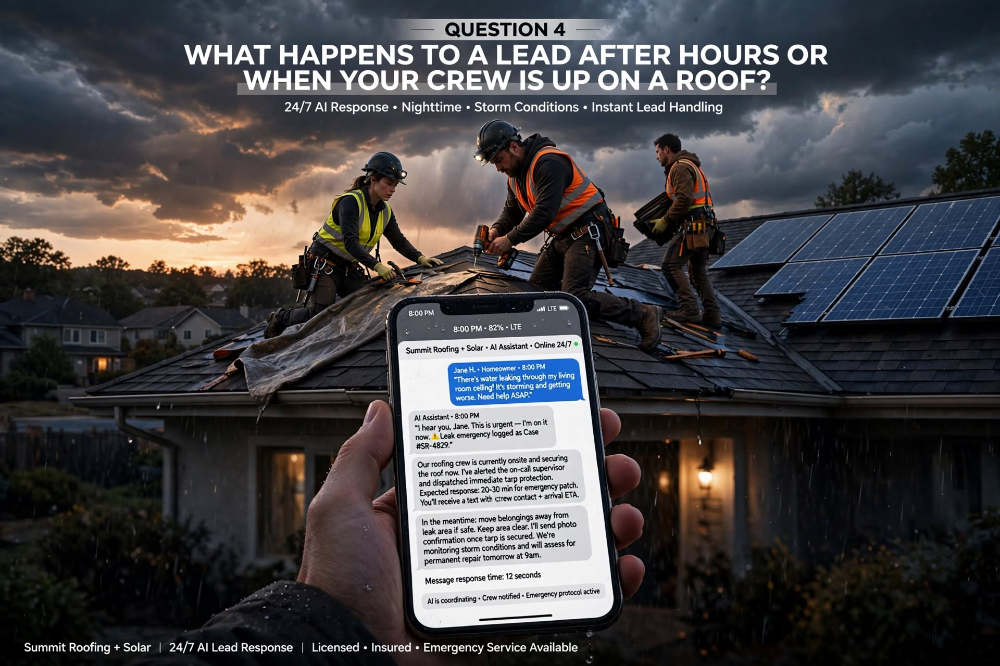
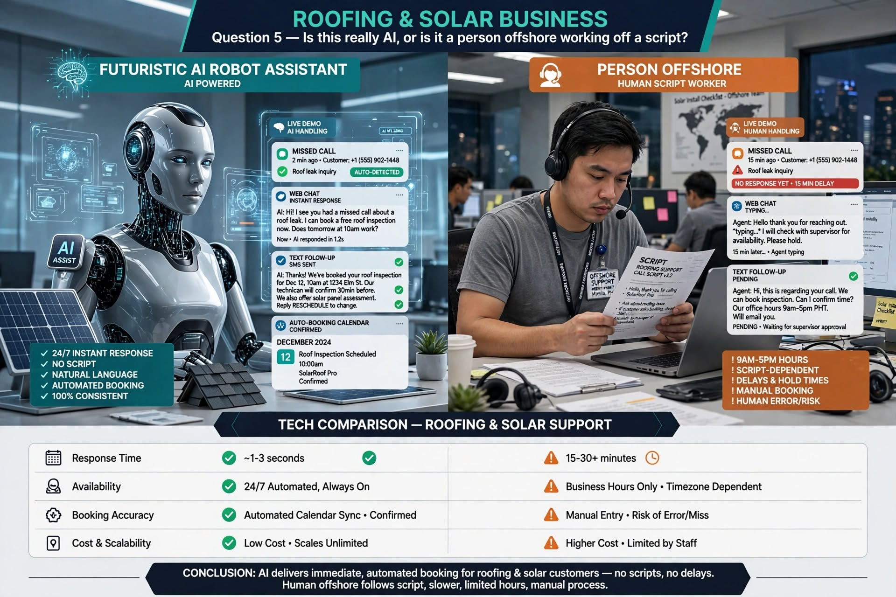
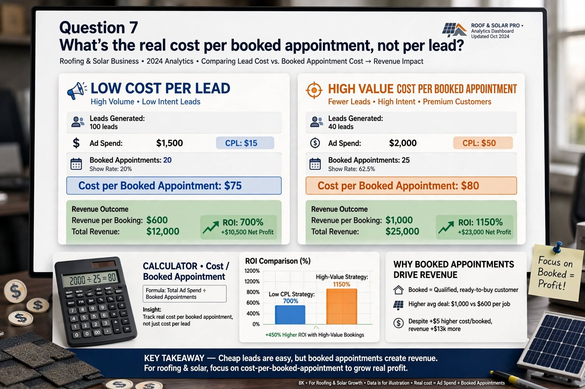
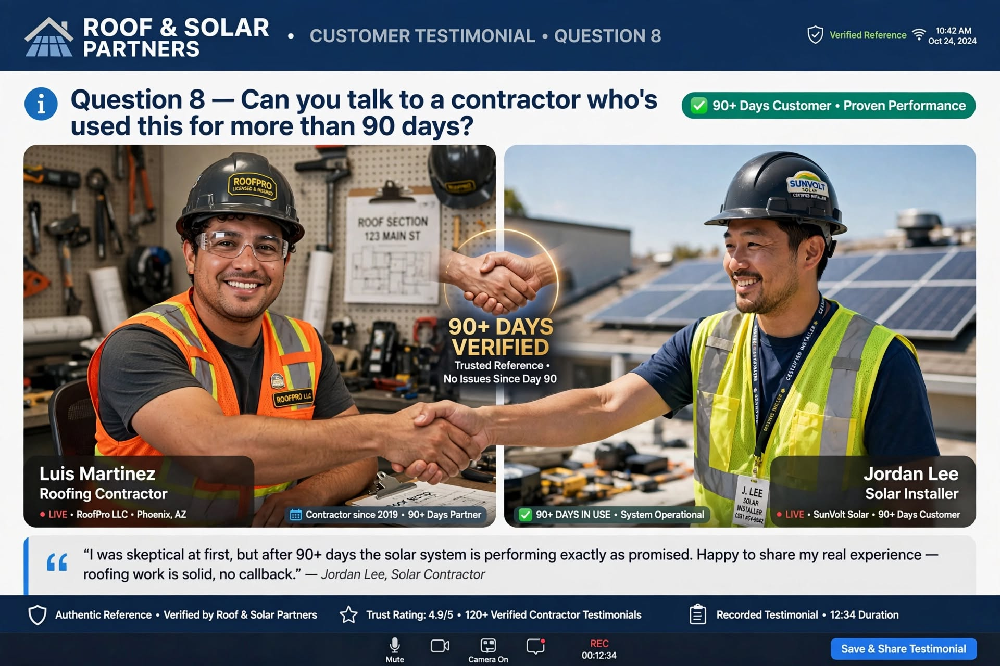

Every roofing and solar company gets the same pitch these days. "We'll fill your calendar with qualified leads." Some companies actually do it. A lot of them just send an invoice.
The difference isn't the sales pitch. It's what happens after you sign the contract. Here are eight questions worth asking any lead generation partner, including us, before you hand over a credit card.
Can you see your own leads in real time, or do you have to wait for a report?
If the answer involves waiting on a monthly PDF, that's a problem. A good system gives you (or your office manager) a live dashboard showing every lead the second it comes in: name, address, job type, and where it came from. If a partner can't pull that up in the first five minutes of a demo, they probably don't have it.

Is there proof a real appointment got booked, or just a form fill?
A form submission and a scheduled estimate are two different things. Ask if the system books the appointment straight onto your calendar, and ask to see the call recording or chat transcript that led to it. Anyone can generate form fills. A booked, confirmed appointment is the thing you're actually paying for.

Who owns the ad accounts, the phone number, and the database if you leave?
Most contractors don't ask this until it's too late. If your PPC account, tracking number, or lead database technically belongs to the agency, you lose all of it the day you cancel. Ask upfront, in writing, what you keep if things don't work out.

What happens to a lead after hours or when your crew is up on a roof?
Roofing and solar jobs usually come from urgent moments: storm damage, a leak, a homeowner comparing quotes at 8 p.m. after work. If your system can't respond the second someone reaches out, day or night, you're handing that job to whoever answers first. Ask how fast a lead actually gets a response when nobody's in the office.

Is this really AI, or is it a person offshore working off a script?
"AI-powered" gets thrown around loosely. Ask what's actually automated and what's a human typing in the background. Then ask to see it live: a missed call, a web chat, a text follow-up. You should be able to watch the system qualify a homeowner, check the calendar, and book the appointment on its own.

How is your data protected, and is it kept separate from other contractors?
Some agencies run every client through the same shared ad account or shared database. That can mean the guy down the street is technically pulling from the same lead pool as you. Ask whether your business gets its own private setup: separate database, separate numbers, separate tracking.
What's the real cost per booked appointment, not per lead?
Cost per lead is easy to make look good. Cost per booked appointment is the number that actually matters, because it ties back to revenue. Ask for that number specifically, and ask how they calculate it.

Can you talk to a contractor who's used this for more than 90 days?
Case studies are easy to write. A real phone call with a roofing or solar owner who's been live for a few months is a lot harder to fake. If a partner won't connect you with an actual reference in your industry, that's an answer in itself.

Why we built OnPlug around these answers
Roofing and solar go hand in hand. The same homeowner asking about a new roof is often a solid candidate for solar too, and the same lead system should be working both angles at once. We put this list together because we've been on the other side of these conversations, both as contractors trying to figure out who to trust and as the team building this system now.
OnPlug is built to be one partner for your entire growth stack: live lead visibility, real booked appointments instead of just form fills, a private setup for your business, and a database you own from day one.
If you're vetting a lead gen partner right now, run them through this list. Including us.